Kumpulan fitur kecil, tips, dan trik di JASP yang sangat membantu dalam analisis data sehari-hari. Klik setiap poin untuk menampilkan video tutorialnya.
6 bagian · 19 tips. Klik bagian mana pun untuk langsung menuju halaman tersebut.
6
Bagian / Seksi
19
Tips & Tutorial
GIF
Format Video
01
🎯 Pengelolaan Analisis & Workflow
3 tips — Modul, urutan analisis, anotasi
›
02
📂 Manajemen Data
5 tips — Tipe variabel, NA, pencarian, resize
›
03
🌍 Settings
2 tips — Bahasa & dark mode
›
04
📊 Output & Visualisasi
4 tips — CI, plot, simpan gambar, PPT
›
05
📤 Ekspor
5 tips — Word, LaTeX, HTML, PDF, format lainnya
›
06
📥 Akses Data
2 tips — Data library & file bantuan
›
💡
Cara pakai: Klik judul setiap tip untuk membuka atau menutup video tutorialnya. Hanya satu video yang terbuka dalam satu waktu agar tampilan tetap rapi.
🎯 Bagian 01
Pengelolaan Analisis & Workflow
Tips untuk mengatur dan mendokumentasikan alur analisis di JASP secara efisien.
🎯
Pengelolaan Analisis & Workflow
Kelola modul, urutan analisis, dan dokumentasi output dengan mudah
3 tips
1
Menambahkan modul baru
Add a new module
▶ Tonton▾
📹 Tutorial GIF Klik thumbnail untuk memutar
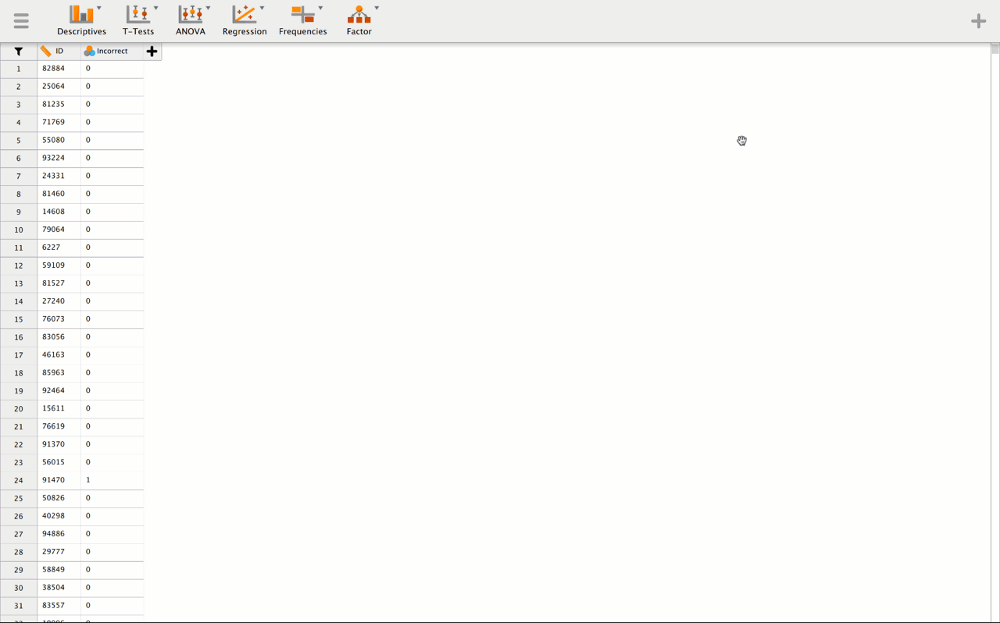
2
Mengatur urutan analisis
Arrange analyses
▶ Tonton▾
📹 Tutorial GIF
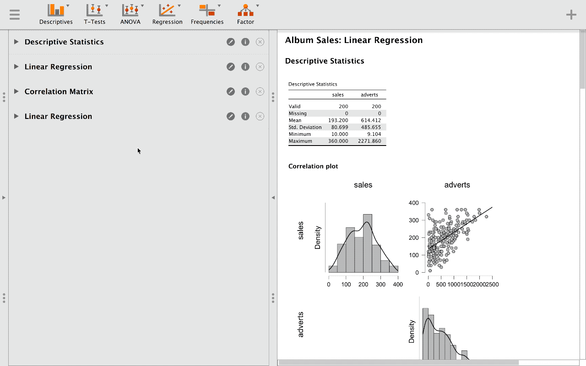
3
Menulis anotasi output
Write annotations
▶ Tonton▾
📹 Tutorial GIF
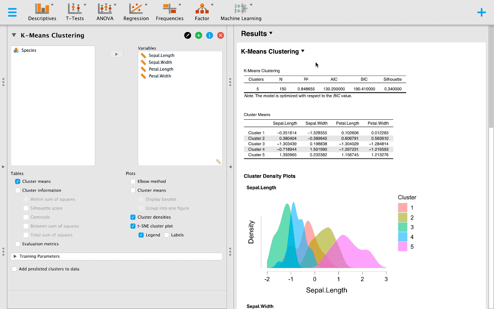
💡 Pro Tip: Anotasi output sangat berguna untuk memberi catatan interpretasi langsung di sebelah tabel atau grafik sebelum diekspor ke Word atau PPT.
📂 Bagian 02
Manajemen Data
Tips untuk mengelola variabel, menangani missing values, dan navigasi data dengan cepat.
📂
Manajemen Data
Tipe variabel, nilai NA, pencarian, dan resize tampilan data
5 tips
4
Mengubah tipe variabel
Change variable type
▶ Tonton▾
📹 Tutorial GIF
5
Threshold kategorik vs skala
Import threshold
▶ Tonton▾
📹 Tutorial GIF
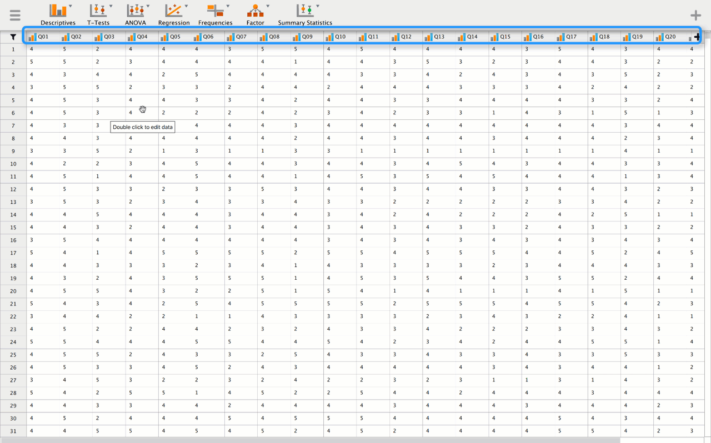
6
Menentukan nilai NA
Set NA values
▶ Tonton▾
📹 Tutorial GIF
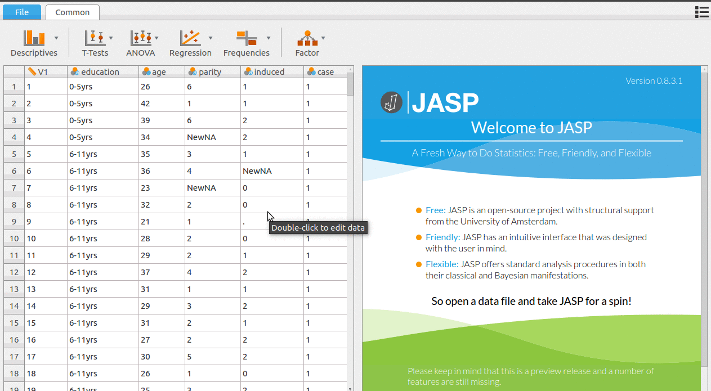
7
Mencari variabel cepat
Search variables
▶ Tonton▾
📹 Tutorial GIF
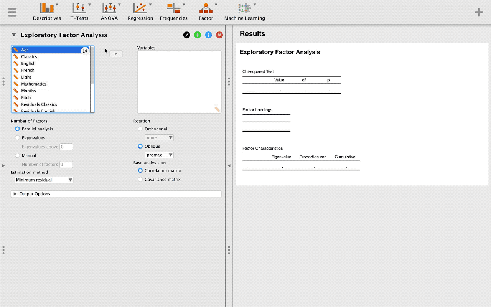
8
Resize tampilan data
Resize data view
▶ Tonton▾
📹 Tutorial GIF
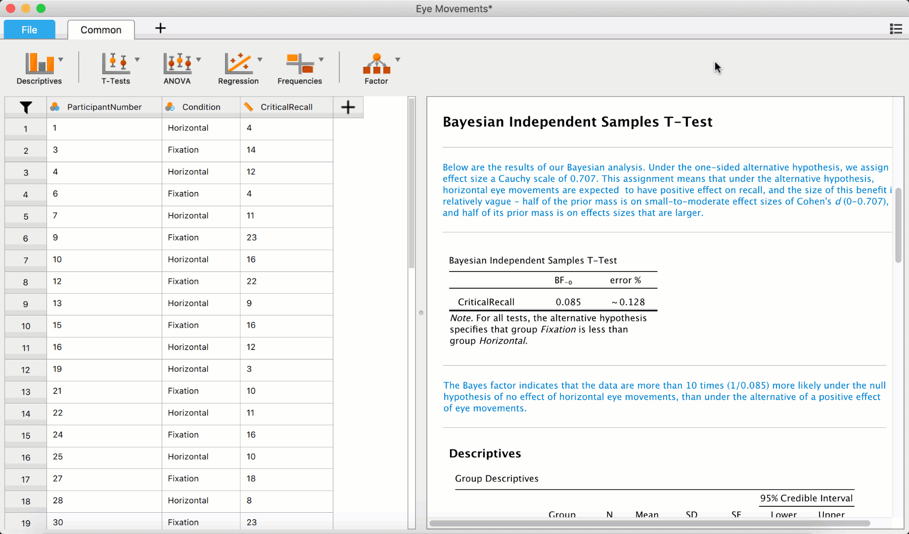
⚠️
Perhatian: Pastikan tipe variabel sudah benar sebelum menjalankan analisis. JASP menentukan metode analisis yang tersedia berdasarkan tipe variabel (nominal, ordinal, atau continuous).
🌍 Bagian 03
Settings JASP
Kustomisasi tampilan dan bahasa JASP sesuai preferensimu.
🌍
Settings
Bahasa antarmuka dan tema tampilan JASP
2 tips
9
Mengubah bahasa
Language settings
▶ Tonton▾
📹 Tutorial GIF
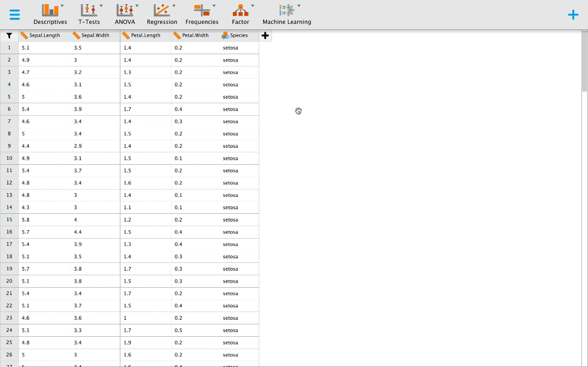
10
Dark mode
Dark theme
▶ Tonton▾
📹 Tutorial GIF
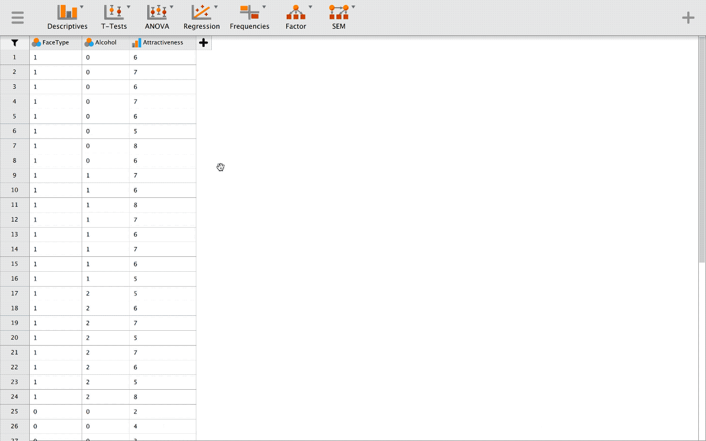
💡 Pro Tip: Dark mode di JASP tidak hanya mengubah tampilan antarmuka, tapi juga mempengaruhi background default plot/grafik yang dihasilkan — cocok untuk presentasi dengan layar gelap.
📊 Bagian 04
Output & Visualisasi
Tips untuk memaksimalkan tampilan dan penyimpanan output analisis JASP.
📊
Output & Visualisasi
Confidence interval, plot background, simpan gambar, dan ekspor PPT
4 tips
11
Confidence interval effect size
CI effect size
▶ Tonton▾
📹 Tutorial GIF
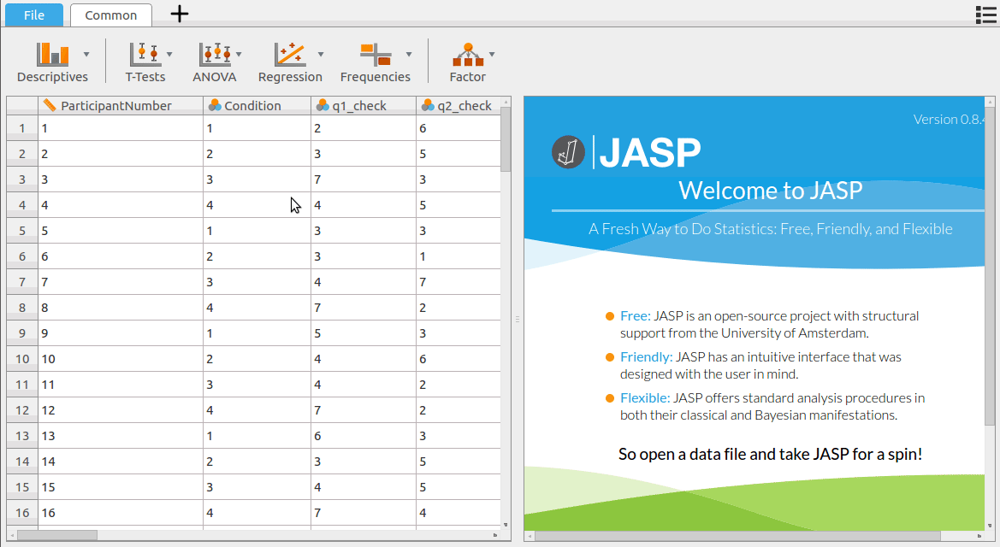
12
Background plot
Plot background
▶ Tonton▾
📹 Tutorial GIF
13
Simpan plot sebagai gambar
Save plot as image
▶ Tonton▾
📹 Tutorial GIF
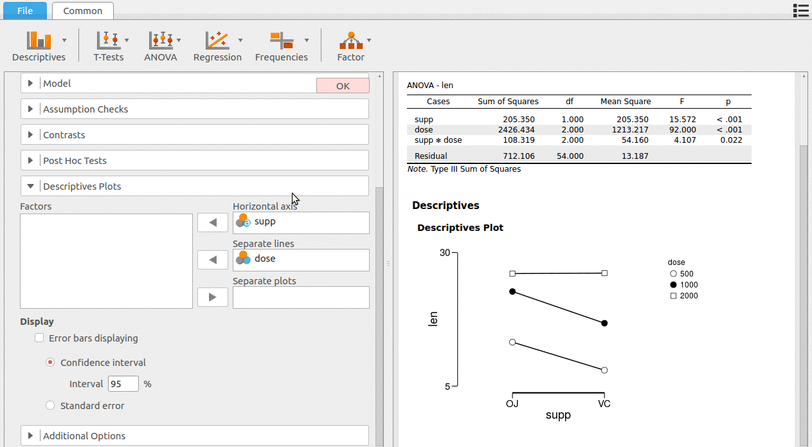
14
Export ke PPT
Export to PowerPoint
▶ Tonton▾
📹 Tutorial GIF
💡
Saat menyimpan plot sebagai gambar, pilih format PNG untuk publikasi jurnal (resolusi tinggi) atau SVG untuk grafik yang bisa diedit ulang di Illustrator/Inkscape.
📤 Bagian 05
Ekspor Hasil
Tips untuk menyalin dan mengekspor output JASP ke berbagai format dokumen.
📤
Ekspor
Copy ke Word, LaTeX, HTML, dan format ekspor lainnya
3 tips
15
Copy ke Word
Copy to Word
▶ Tonton▾
📹 Tutorial GIF
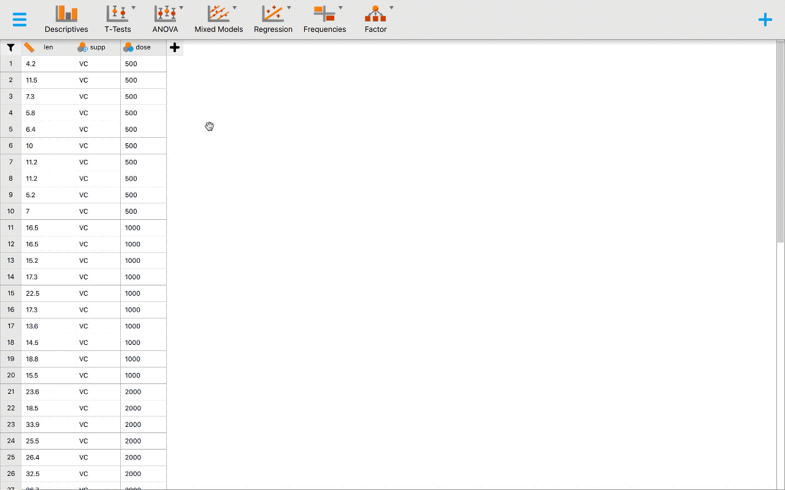
16
Copy LaTeX
Copy as LaTeX
▶ Tonton▾
📹 Tutorial GIF
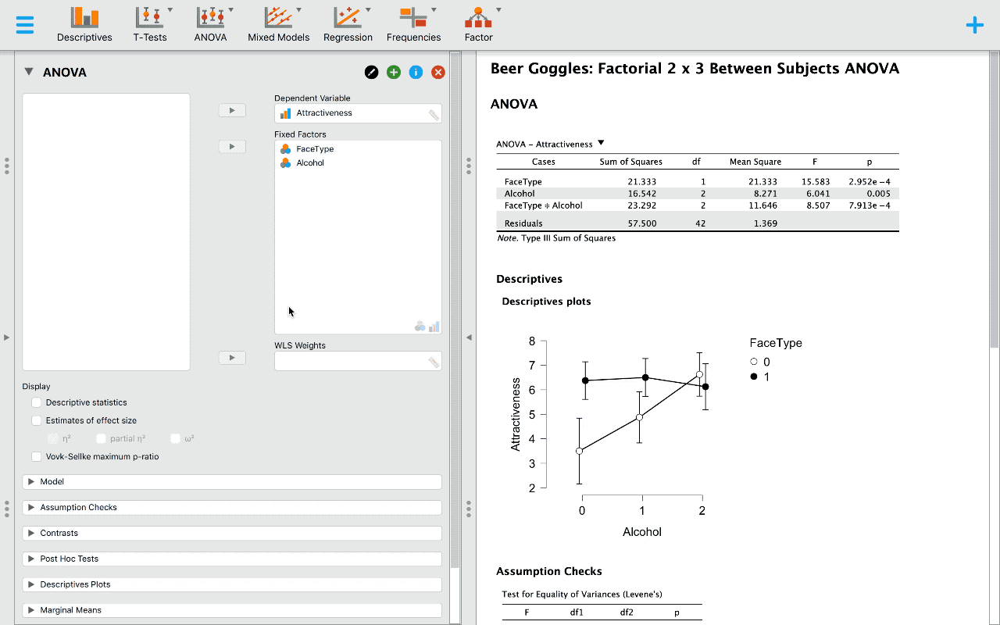
17
Export HTML
Export as HTML
▶ Tonton▾
📹 Tutorial GIF
💡 Pro Tip: Fitur Copy LaTeX sangat berguna untuk mahasiswa yang menggunakan Overleaf atau LaTeX untuk tesis/jurnal — tabel langsung siap pakai tanpa perlu format ulang.
📥 Bagian 06
Akses Data & Bantuan
Tips untuk mengakses dataset bawaan JASP dan file dokumentasi bantuan.
📥
Akses Data
Data library bawaan dan file bantuan resmi JASP
2 tips
18
Data library
Load dataset from library
▶ Tonton▾
📹 Tutorial GIF
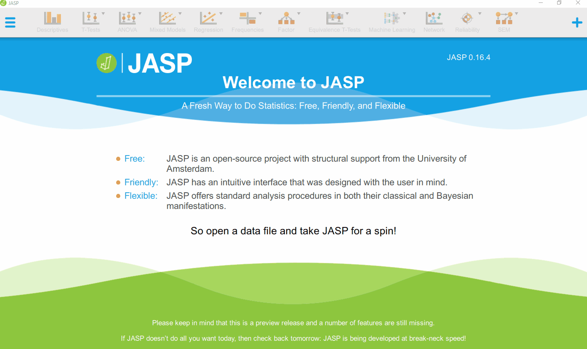
19
File bantuan
Help file
▶ Tonton▾
📹 Tutorial GIF
Mau belajar lebih lanjut? 📊
Kunjungi Ruang Statistika untuk tips & trik analisis data lebih lanjut, konsultasi, dan materi pelatihan.